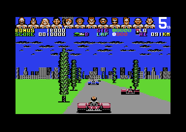

<meta charset="utf-8">
<meta name="viewport" content="width=device-width, initial-scale=1">
<title>Power Drift</title>
<link rel="preconnect" href="https://fonts.googleapis.com">
<link rel="stylesheet" href="https://fonts.googleapis.com/css2?family=Lato:wght@400;700;900&family=IBM+Plex+Mono:wght@400;500&display=swap">
<style>
:root{
  --bg:#23262d; --paper:#e9e7e1; --surface:#ffffff; --surface-2:#f1efea; --line:#d5d3cc; --line-soft:#e0ded8;
  --ink:#2f3136; --ink-soft:#55585f; --ink-mute:#80838a;
  --link:#1f5fa8; --link-hover:#154480; --accent:#1f5fa8;
  --amber:#c25a00; --cyan:#1f5fa8; --coral:#d04a3a; --green:#2a8a4a; --violet:#4a5bd6; --hl:#fff0c2;
  --chip:#2f3136; --chip-ink:#ffffff;
  --c64blue:#40318d; --c64grey:#686868;
  --fd:'Lato',system-ui,sans-serif; --fb:'Lato',system-ui,sans-serif; --fm:'IBM Plex Mono',ui-monospace,Menlo,monospace;
  --col:1080px; --gx:68px; --fs:17px; --lh:1.6; --hw:900; --h1:46px; --h2:26px; --sy:48px; --pp:26px; --r:10px;
  --plate-shadow:0 1px 2px rgba(0,0,0,.05),0 4px 14px rgba(0,0,0,.05);
}
*{box-sizing:border-box}
html{background:var(--bg);min-height:100%}
body{background:var(--paper);color:var(--ink);font-family:var(--fb);font-size:var(--fs);line-height:var(--lh);max-width:var(--col);margin:0 auto;min-height:100vh;padding:0 0 4rem}
h1,h2,h3{font-weight:var(--hw);letter-spacing:-.01em;text-wrap:balance;color:var(--ink);margin:0}
.wrap{padding:0 var(--gx)}
.hero{padding:48px var(--gx) 8px;text-align:left}
.eyebrow{font-family:var(--fm);font-size:12px;letter-spacing:.08em;text-transform:uppercase;color:var(--ink-mute);margin:0 0 10px}
.hero h1{font-size:var(--h1);line-height:1.15;letter-spacing:-.02em;margin:0 0 14px}
.hero .sub{margin:0 0 .6em;color:var(--ink-soft)}
section{padding:var(--sy) 0 24px}
section:last-of-type{border-bottom:none}
.fig{font-family:var(--fm);font-size:12px;letter-spacing:.08em;text-transform:uppercase;color:var(--ink-mute);margin:0 0 10px}
h2.t{font-size:var(--h2);margin-bottom:12px}
h3{font-size:19px;margin:26px 0 8px}
.lede{color:var(--ink-soft);margin:0 0 30px}
.plate{background:var(--surface);border:1px solid var(--line);border-radius:var(--r);padding:var(--pp);box-shadow:var(--plate-shadow)}
.cap{font-size:14px;color:var(--ink-mute);margin-top:14px;line-height:1.55}
.cap b{color:var(--ink);font-weight:700}
code{font-family:var(--fm);font-size:.82em;background:var(--chip);color:var(--chip-ink);border-radius:4px;padding:2px 6px;overflow-wrap:break-word;-webkit-box-decoration-break:clone;box-decoration-break:clone}
.pd-shots{display:grid;grid-template-columns:repeat(auto-fit,minmax(240px,1fr));gap:12px}
.pd-shots figure{margin:0}
.pd-shots img{display:block;width:100%;height:auto;image-rendering:pixelated;border-radius:4px}
.pd-shots figcaption{font-size:13px;color:var(--ink-mute);margin-top:6px}
.pd-cv{display:block;width:100%;height:auto;image-rendering:pixelated;background:#000;border-radius:4px}
.pd-bar{display:flex;gap:8px;flex-wrap:wrap;align-items:center;margin:0 0 14px}
.pd-btn{font-family:var(--fm);font-size:13px;background:var(--surface-2);border:1px solid var(--line);border-radius:6px;padding:6px 11px;cursor:pointer;color:var(--ink)}
.pd-btn[aria-pressed="true"]{background:var(--chip);color:var(--chip-ink);border-color:var(--chip)}
.pd-sel{font-family:var(--fm);font-size:13px;padding:5px 8px;border:1px solid var(--line);border-radius:6px;background:var(--surface)}
.pd-bar label{font-family:var(--fm);font-size:13px;color:var(--ink-soft);display:flex;gap:8px;align-items:center}
.pd-bar input[type=range]{width:200px;max-width:50vw}
.pd-out{font-family:var(--fm);font-size:13px;color:var(--ink-soft)}
.pd-tab{border-collapse:collapse;width:100%;font-size:14px;margin-top:14px}
.pd-tab th,.pd-tab td{border-bottom:1px solid var(--line-soft);padding:6px 8px;text-align:left;vertical-align:top}
.pd-tab th{font-family:var(--fm);font-size:12px;letter-spacing:.06em;text-transform:uppercase;color:var(--ink-mute);font-weight:500}
.pd-tab td.n{font-family:var(--fm);text-align:right}
.pd-tab th.n{text-align:right}
.pd-scroll{overflow-x:auto}
@media (max-width:760px){:root{--gx:20px;--h1:34px;--pp:16px}}
.pd-pre{font-family:var(--fm);font-size:14px;margin:0;white-space:pre;overflow-x:auto}
</style>
<!-- tabs -->
<header class="hero">
  <p class="eyebrow">1989 · Activision · Discoveries</p>
  <h1>Power Drift</h1>
  <p class="sub">The time bonus is counted out in the wrong number system, so a stage that ends with the clock's seconds at exactly 45 pays 256,000 points, more than any other time.</p>
</header>
<main class="wrap">

<section id="bonus">
  <p class="fig">01 · The time bonus</p>
  <h2 class="t">Bug: the time bonus is counted out in hexadecimal</h2>
  <p class="lede">After a stage won, the panel shows a bonus of 45 minus the seconds on the clock, and counts it into the score a thousand points at a time. The count runs in the wrong number system, so the bonus pays more than it shows, the panel shows letters, and 45 seconds exactly pays the most of all.</p>
  <div class="plate">
    <div class="pd-bar">
      <label>Race time <select class="pd-sel" id="pd-min"></select></label>
      <label><input type="range" id="pd-sec" min="0" max="59" value="20"></label>
      <span class="pd-out" id="pd-time"></span>
      <button class="pd-btn" type="button" id="pd-count">Count it</button>
    </div>
    <canvas class="pd-cv" id="pd-panel" width="104" height="8" style="max-width:520px"></canvas>
    <p class="pd-out" id="pd-pay"></p>
    <p class="pd-out" id="pd-seq"></p>
    <p class="cap">The line is drawn with the panel's own characters and colours, from <code>str_bonus</code> (<code>$10CD</code>) with the two bonus digits in its 9th and 10th places, as <code>draw_bonus_digits</code> writes them. What it shows, and what it pays, come from a port of <code>show_bonus</code> and <code>count_bonus</code> written for this page. <code>test_bonus.js</code> runs the game's own routines on the kit's simulator for every second from 0 to 59, with three values of the minutes, and checks that the port shows the same digits at every count and pays the same points. In the emulator, with the seconds set to 20, the bonus showed 25, counted 37 times and left 37,000 points.</p>
  </div>
  <div class="pd-shots" style="margin-top:18px;max-width:520px"><figure><figcaption>The count partway through in the emulator: BONUS 1B000. The bonus started at 25 and has counted down past 20 into 1F, 1E, 1D, 1C and 1B.</figcaption></figure></div>
  <p>The clock keeps its seconds as two decimal digits in one byte, a form called binary-coded decimal: 20 seconds is the byte <code>$20</code>. The processor has a decimal mode in which adding and subtracting work on such bytes. <code>show_bonus</code> (<code>$10B4</code>) turns it on and subtracts the seconds from <code>$45</code>, so 20 seconds leaves <code>$25</code>, which the panel shows as 25. It never looks at the minutes, so a race of 2 minutes 20 seconds earns the same bonus as one of 20 seconds. A race of more than 45 seconds into its minute wraps round below 0: 46 seconds shows 99 and 59 shows 86.</p>
  <p><code>count_bonus</code> (<code>$10DA</code>) then repeats, once a frame: turn decimal mode on, add 1,000 points, draw the score, take 1 off the bonus, draw the bonus. But <code>draw_score</code> ends by turning decimal mode off (<code>CLD</code> at <code>$34AE</code>), so every subtraction is plain binary. Counted down in binary, the byte <code>$25</code> takes 37 steps to reach 0, not 25, and on the way the panel shows 1F, 1E and so on down to 1A, then 0F to 0A: the digits 10 to 15, which the panel's alphabet draws as the letters A to F. The bonus pays its two digits read as a hexadecimal number, counting in sixteens with A to F as the digits after 9, in thousands of points.</p>
  <p>So a slow race pays best. Seconds of 46 to 59 show 99 to 86 and pay 153,000 to 134,000 points. Exactly 45 seconds shows 00; the count takes 1 off before it checks for 0, so the byte goes round through FF and the bonus pays 256,000 points, more than any other time. A race of 44 seconds shows 01 and pays 1,000.</p>
</section>

<section id="clock">
  <p class="fig">02 · The clock</p>
  <h2 class="t">The race clock runs about 40 % fast</h2>
  <p class="lede">The clock on the panel counts the game's own pictures, not time. Ten seconds of play put about fourteen and a half seconds on it.</p>
  <div class="plate">
    <table class="pd-tab">
      <tr><th>Run in the emulator</th><th>Video frames</th><th>Race frames</th><th>Clock moved</th></tr>
      <tr><td>Standing, and with up held, in several runs</td><td class="n">500</td><td class="n">166 to 177</td><td class="n">14 to 15 s</td></tr>
    </table>
    <p class="cap">500 PAL video frames are ten seconds. Race frames counted with a checkpoint on <code>race_frame_loop</code>; the clock read from <code>$53DF</code>-<code>$53E1</code> before and after.</p>
  </div>
  <p><code>race_clock</code> adds 1 to a hidden digit after the seconds every other race frame. The digit runs from 0 to 5, so a second on the clock is 12 race frames. A race frame is one whole picture of the view, drawn while the other screen is shown, and it takes about three of the video chip's 50 frames a second, so the race makes about 17 a second. Twelve race frames take about 0.7 seconds.</p>
  <p>The fast clock does not change the order of the race, since every kart moves on the same race frames. It does change <a href="#bonus">the time bonus</a>, which reads the seconds on the clock.</p>
</section>

<section id="engine">
  <p class="fig">03 · Sound effects</p>
  <h2 class="t">Secret: an engine sound the game never plays</h2>
  <p class="lede">The sound driver holds four effects. The game starts only two of them, and the fourth is an engine's hum that keeps itself going.</p>
  <p>A search of the code for every write to <code>sound_effect</code> (<code>$B805</code>) finds the value 2, when the place changes or a rival comes alongside, and 3, for a spin, and otherwise only the driver itself. Effect 4 is a steady tone with a pulse that sweeps up and down, and its last command jumps back to repeat it. Starting it sets <code>$B808</code>, and while that is set, the end of any other effect starts effect 4 again (<code>sound_end_effect</code>). The only routine that clears it, <code>sound_engine_off</code> (<code>$C01C</code>), is called by nothing. It sounds like an engine.</p>
  <p>Effect 1 has no writer either. It is the only pattern that uses command 36, which reads the keyboard's port at <code>$DC01</code> and then ignores what it read (<code>cmd_effect_release</code>). Both can be heard on the <a href="index.html#effects">How it works</a> tab.</p>
</section>

<section id="jump">
  <p class="fig">04 · Jumps</p>
  <h2 class="t">In the air, the stick does nothing</h2>
  <p class="lede">A jump fixes the kart's sideways drift at the moment it leaves the ground.</p>
  <p>From the 7th to the 21st step of a jump piece the kart is in the air, and <code>piece_jump</code> sets <code>$53E8</code>. While it is set, <code>move_player</code> leaves out the steering and every change of speed; only fire still changes gear. It still adds the road's sideways slide at <code>$30</code> to the kart's place across the road, and nothing changes <code>$30</code> in the air, so the kart keeps sliding the way the stick last pushed it on the ground until it lands.</p>
</section>

<section id="stripes">
  <p class="fig">05 · Unused pictures</p>
  <h2 class="t">Two sprites of stripes that nothing shows</h2>
  <p class="lede">Sprites <code>$A1</code> and <code>$A2</code> sit in the part of a view screen that is never shown, and no table or routine points a sprite at them.</p>
  <div class="plate"><canvas class="pd-cv" id="pd-stripes" width="96" height="42" style="max-width:384px"></canvas>
  <p class="cap">Sprites <code>$A1</code> and <code>$A2</code> from <code>$E840</code> and <code>$E880</code>, drawn in multicolour, as the race draws every sprite, with the race's two shared sprite colours, black and light grey, and white for their own colour, which nothing gives them.</p></div>
  <p>The video chip finds a sprite's picture at 64 times its pointer in the video bank at <code>$C000</code>. Pointers <code>$A0</code> to <code>$A2</code> land in rows 0 to 4 of the view screen at <code>$E800</code>, which is never shown, since the panel takes those rows from another screen; so the game keeps three sprites there. <code>$A0</code> is the last driver's head looking back. The other two hold only bands of stripes.</p>
</section>

<section id="note">
  <p class="fig">06 · Text</p>
  <h2 class="t">Secret: a note in front of the first instruction</h2>
  <p class="lede">The game's code starts at <code>$0834</code>. The 52 bytes before it are text that nothing reads.</p>
  <div class="plate"><pre class="pd-pre" id="pd-sig"></pre>
  <p class="cap">The bytes at <code>$0800</code>-<code>$0833</code> (<code>signature_text</code>), as text: a return is a new line, and <code>$05</code>, the code for white text, is left out.</p></div>
  <p>The loader's last instruction jumps to <code>$0834</code>, just past the text. The copyright line on the select screen names Activision, Sega and Chris Butler. What "pbj gma89" stands for is not known.</p>
</section>

</main>
<footer style="margin:16px 0 0;padding:22px var(--gx) 0;border-top:1px solid #e0ded8;font-family:'IBM Plex Mono',ui-monospace,Menlo,monospace;font-size:12px;color:#80838a"><a href="https://github.com/gamesexplained/gamesexplained" style="color:#1f5fa8;text-decoration:none">GitHub</a> · <a href="https://discord.gg/3V9GWyRDWV" style="color:#1f5fa8;text-decoration:none">Discord</a><br>© Games Explained contributors. Write-ups, facts and symbol maps are available under <a href="https://creativecommons.org/licenses/by-sa/4.0/" style="color:#1f5fa8;text-decoration:none">CC BY-SA 4.0</a>; code under <a href="https://opensource.org/licenses/MIT" style="color:#1f5fa8;text-decoration:none">MIT</a></footer>
<script src="../../lib/c64.js"></script>
<script>
/* pd-bonus */
// The time bonus as show_bonus ($10B4) and count_bonus ($10DA) make it, from the clock's seconds
// ($53E0, two decimal digits in one byte). show_bonus subtracts them from $45 in decimal mode and
// never reads the minutes: seconds over 45 wrap round below 0, so 46 gives $99. count_bonus adds
// 1,000 points in decimal mode, then takes 1 off the bonus after draw_score has left decimal mode,
// so the bonus is counted down as a binary byte, and stops when it reaches 0. pdBonus returns the
// byte shown, the byte the panel shows after each count and the points paid.
function pdBonus(secs) {
  const d = (secs >> 4) * 10 + (secs & 15);
  const left = (145 - d) % 100;
  const shown = Math.floor(left / 10) << 4 | left % 10;
  const counts = [];
  let b = shown;
  do { b = (b - 1) & 0xFF; counts.push(b); } while (b);
  return { shown, counts, points: counts.length * 1000 };
}
// end of pd-bonus
</script>
<script>
(function () {
  const $ = (id) => document.getElementById(id);
  for (let m = 0; m < 4; m++) $('pd-min').add(new Option(m + '′', String(m)));
  const bcd = (n) => Math.floor(n / 10) << 4 | n % 10;
  const hex2 = (v) => v.toString(16).toUpperCase().padStart(2, '0');
  const thousands = (n) => n.toLocaleString('en-GB');
  let draw = null, timer = 0;
  function show() {
    clearInterval(timer); timer = 0;
    const s = +$('pd-sec').value, B = pdBonus(bcd(s));
    $('pd-time').textContent = $('pd-min').value + '′ ' + String(s).padStart(2, '0') + '″';
    if (draw) draw(B.shown);
    $('pd-pay').textContent = 'Shows ' + hex2(B.shown) + ', counts ' + B.counts.length + ' times and pays ' + thousands(B.points) +
      ' points. Counted in decimal it would pay ' + thousands(((B.shown >> 4) * 10 + (B.shown & 15)) * 1000) + '.';
    const c = B.counts, list = c.length > 12 ? c.slice(0, 6).map(hex2).join(' ') + ' … ' + c.slice(-4).map(hex2).join(' ') : c.map(hex2).join(' ');
    $('pd-seq').textContent = 'The panel shows ' + hex2(B.shown) + ', then ' + list + '.';
  }
  $('pd-sec').oninput = show; $('pd-min').onchange = show;
  $('pd-count').onclick = () => {
    show();
    const c = pdBonus(bcd(+$('pd-sec').value)).counts;
    let i = 0;
    timer = setInterval(() => { if (draw) draw(c[i]); if (++i >= c.length) { clearInterval(timer); timer = 0; } }, 40);
  };
  show();
  if (typeof C64 === 'undefined') {
    $('pd-panel').insertAdjacentHTML('afterend', '<p class="cap">The panel line needs the site\'s shared scripts, which did not load.</p>');
    return;
  }
  C64.load('listing.json').then((L) => {
    const r = L.ram, P = C64.PAL;
    // the bonus line: str_bonus in the panel's set at $F000, multicolour, in the colours of row 3 in a
    // recorded frame of course B: background 6 and multicolour 1 15 from race_irq_top, multicolour 2
    // black from panel_irq_lower, and the colour RAM: yellow for BONUS, white for the digits
    const cs = r.slice(0xF000, 0xF800), COL = [15, 15, 15, 15, 15, 0, 9, 9, 9, 9, 9, 9, 9];
    const ctx = C64.canvas($('pd-panel'), 104, 8);
    draw = (b) => {
      const cells = Array.from(r.subarray(0x10CD, 0x10CD + 13));
      cells[8] = b >> 4; cells[9] = b & 15;
      ctx.fillStyle = P[6]; ctx.fillRect(0, 0, 104, 8);
      cells.forEach((code, i) => {
        if (COL[i] >= 8) C64.drawGlyphMC(ctx, cs, code, i * 8, 0, 1, [null, P[15], P[0], P[COL[i] & 7]]);
        else C64.drawGlyph(ctx, cs, code, i * 8, 0, 1, P[COL[i]]);
      });
    };
    show();
    // the stripes
    const sx = C64.canvas($('pd-stripes'), 96, 42);
    sx.fillStyle = P[6]; sx.fillRect(0, 0, 96, 42);
    [0xA1, 0xA2].forEach((p, i) => C64.drawSpriteMC(sx, r.subarray(0xC000 + 64 * p, 0xC000 + 64 * p + 63), 12 + i * 48, 10, 1, P[1], P[0], P[15]));
    // the note
    let t = '';
    for (let a = 0x0800; a < 0x0834; a++) { const v = r[a]; t += v === 13 ? '\n' : v === 5 ? '' : String.fromCharCode(v); }
    $('pd-sig').textContent = t.replace(/\n+$/, '');
  }).catch((e) => { $('pd-panel').insertAdjacentHTML('afterend', '<p class="cap">The listing did not load: ' + e.message + '</p>'); });
})();
</script>
